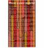
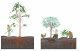
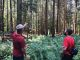
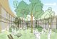
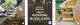

This is part of a three piece thinking series, please also see Treelogy Part II: The tree and timber and Treelogy Part III: The urban forest
Results [0]
What are you looking for?
MNDHRI


 Close
Close
Close
Thinking 12 November, 2021 | 5 min read
Treelogy, Part I: Learning from Woodlands

Treelogy, Part I: Learning from woodlands – vignette by dRMM.
Wood is hopeless when it comes to being a finite resource. If your project needs to be made from limited material elaborately processed, with the consequence of pollution and climate change, look elsewhere.
Alex de Rijke
Director
Director
For 25 years, dRMM has kept timber in the foreground of its practice.
In 2018, the studio exhibited 24 of its timber led projects as 24 timber-built models in the acclaimed Forest of Fabrication exhibition at the Building Centre. dRMM Director Alex de Rijke then delivered a manifesto titled, Wood; a poor material, as a keynote in the 2020 Wood Awards, from which this essay’s opening quote is pulled. Timber has always been compelling to us for its obvious sustainability traits, alongside its properties of tactility and warmth. However tongue-in-cheek our declarations in its support may be, we remain commited to research into solutions to the challenges involved with building in timber, as well as extolling its virtues.
Along the way, this research has turned to natural material supply chains. Recent studies into the emission-potential of unregulated forestry, and the processes within complex, adaptive forest ecosystems, have offered insights that we feel duty bound to learn more about. Our role as construction professionals is secondary to our place within a wider ecosystem. This dictates that we are mindful of the impacts of our material resourcing.


Timber manifesto by Alex de Rijke.
Scientists and campaigners have helped the architecture and construction profession recognise the potential for timber buildings to store carbon.
We now celebrate forests of timber as important CO2 sinks that are able to reverse damage caused by generations of fossil fuel consumption. Trees absorb carbon and through photosynthesis make cellulose, the founding block of all tree-derived products. And not just ‘a little’ cellulose, trees generate some 100bn tonnes of it globally each year, compared to 381 million tonnes of plastic generated by humankind, from fossil fuels, per annum. All this cellulose being produced means around 7.6 billion tonnes of carbon is locked away. But it’s not just trees carrying out this hard work in sequestering carbon and locking it away. The carbon cycle is reliant on the rich and varied life of the entire forest ecosystem.
Tree canopies are the first filter of the sun’s direct radiation, refracting and reflecting light into different wavelengths compatible with the biological functions of plants and animals all around them. Many different species are adapted to highly specific conditions affected by temperature and humidity to make use of the sun’s energy. Susan Simard’s research into fungi has revealed the importance of these kinds of adaptations. Her methodology has exposed complex working relationships between trees and fungi, which have developed a system of transporting carbon absorbed by the tree during photosynthesis and burying it deep underground.


In nature, nothing exists alone.
Rachael Carson
Silent Spring
Silent Spring
Beyond trees, fungi and soil are other important characters in the carbon cycle, many of which depend on the regular growth and decay of organic matter. Birds and squirrels are responsible for large portions of newly planted trees through their droppings or storing of seeds for winter consumption, whilst bramble and bracken’s spiky thorns provide shelter to young saplings from strong winds and hungry mammals. Fallen trees contribute rich mineral deposits to the forest floor as they break down, releasing a steady supply of carbon dioxide in balance with the photosynthetic demands of neighbouring plants. Overall, healthy forests are net sequesters with even with this significant generation of carbon dioxide.

Promoting more and better tree planting through ACAN and Architecture Declare's 'England tree strategy' campaign.
What does this all mean for timber supply and resourcing?
It means the idea that a forest should consist of a single species of tree alone is now outdated, calling for new levels of awareness to the ways in which we specify timber within construction.
Today, most productive woodlands are plantations, yielding a crop of trees like a farmer’s field. Timber is felled by a trained forester and bought either ‘standing’ or ‘road-side’. If supply is consistent for a particular species, there is no economic reason to plant others, meaning monocultures of fast-growing softwood have come to dominate many forests. But these wooded areas are host to far fewer species of the fungi, flora and fauna we now know to be crucial to the planet’s web of life, and by extension, its carbon sequestering cycle.
Monoculture plantations forests are in some cases emitting more carbon than they store. Developments in data science and computing have allowed multinational corporations and governments of the 20th century to observe (and influence) complex patterns of living nature. This means they have the potential to build ever more sophisticated tools to increase economic yield in the extraction of resources and labour. They have gleaned crucial insights from the ‘Butterfly Effect’, without giving a second thought to the butterfly.

Learning from woodlands – vignette by dRMM.
Fortunately, forward thinking foresters have subverted the monoculture forestry model. Methods of Irregular Silviculture are emerging in response to issues of dwindling biodiversity, whilst maintaining supplies of timber.
The Continuous Cover Forestry initiative has emerged, among other strategies to ensure working woodlands deliver on timber supplies from a greater variety of tree ages and species necessary for a healthy carbon cycle to work. By monitoring habitats and promoting the regular selective extraction of biomass instead of felling vast swathes of woodland, these progressive woodlands even stand to make more money than traditional models, because foresters are better placed to respond to immediate demands for timber rather than hedging their bets on an entire crop projecting decades into the future, with risks of increased susceptibility to pests and diseases wiping the forest out in full.
With continuous extraction also comes continuous planting and the opportunity for foresters to test species that may be better adapted to pests, diseases and changing climates. We also know that land left to its own devices will produce new trees, through animals and birds depositing seeds. In many cases this is far preferable to overly managed, human-planted woodland for resilience and rapid growth – squirrels have a knack for planting seeds in just the right place.

Exploring Hooke Park with Forester Christopher Sadd, seen admiring the trees he planted himself almost 30 years ago.
Aside from the issue of diversity in forestry, as conscientious consumers we also must think of the finitude of the timber we source, being mindful of the sustainable level of extraction of timber from a forest, based on the pace of growth of trees over time, which could be breached if humans demand more than can be replaced.
Despite being an entirely renewable resource, increased global demand for graded softwood has led to shortages of certain wood-based materials in Scandinavia, along with controversies over land management processes in their production.
A shift towards specifying large quantities of Swedish and Finnish Spruce or Pine for engineered timber products has put the supply chain under pressure, despite there being over 60,000 species of tree on planet earth. There has also been inflation in the cost of timber as demand has outstripped sustainable supply of these species. Foresters have been incentivised to clear-cut vast swathes of wooded landscapes as a result. Trees grow in all shapes and sizes, and our demand should reflect their diversity to prevent over-extraction and reliance on homogeneous tree species.
dRMM’s own track record in building with hardwood has gone some way to demonstrating the importance of variety in specifying timber. In using a wider range of tree species, particularly those in local abundance and underutilised species, such as Tulipwood, the demand for timber can be spread more widely, ensuring all species have a chance at a second life in buildings. As a practice, we see building in timber preferable to more short-lived uses, such as paper, toilet paper where the sequestration that has taken place over decades or centuries are frivolously squandered, while buildings have design lives of upwards from 60 years, with timber buildings known to last for even thousands of years. As construction demands for timber increase, without other timber uses decreasing, we may find that forests lack the capacity to sustainably provide for commercial systems.


Wintringham Primary Academy outdoor learning – drawing by dRMM.
So we have to recalibrate not just the way we extract from forests and woodlands, but the way we value them.
The recently published Dasgupta Review describes a fundamental shift in economic thinking to recognise nature not as an ‘externality’ but an asset upon which human life is fundamentally dependent. Just as the state of repair is recognised in the valuation of a house, it should also be recognised in the planet’s natural resources – which currently is in a state of depreciation, with mass species extinction and human demands on nature greater than ever. We need 1.6 planet earths to afford the rate of current consumption, which is predicted to increase to two earths by 2050. To address this, the Review called for the widespread recognition of ‘ecosystem services’ to place a value on living nature beyond renewable energy and the extraction of raw materials, and to conserve and restore natural resources through investment in natural capital.
The only way to create value in a forest is through photosynthesis over time, yet the average price of a standing tree in a working woodland rarely exceeds £100. In valuing trees for their material alone, foresters are losing out and are being forced into practices that wreak havoc on ecosystems. Conversely, companies like Treeconomics are measuring the carbon sequestration, pollution abatement, flood prevention and heat reduction made possible by tree planting, whilst researchers like Liz O’brien of Forest Research have built evidence of the physiological benefits of spending time in woodlands, with a view to impacting the national health budget. These and other advocates have built strong cases for afforestation not only to be driven by offsets for polluting companies, or the generation of natural materials, but to improve the wellbeing of the immediate climate and communities therein.
This year, dRMM has amended its typical timber specification note to support foresters in the UK and promote the increased planting of trees in the country for generations to come, alongside incorporating best practice for timber specification globally. Within complex material supply chains, certification is crucial to ensuring real sustainability and traceability. Grown in Britain is an organisation setting quality standards for constructional timber here in the UK, incorporating biodiversity, carbon sequestration and a fuller picture of the woodland ecosystem in their assessment of forests. Architects can help to support this by specifying Grown in Britain certified timber products in their projects, alongside PEFC, FSC and FLEGT certifications.


Campaigning against the mismanagement of new woodlands by promoting planting for long life harvested wood products. ACAN and AD's 'England tree strategy' response.
At dRMM, we believe the UK’s undervalued, dwindling woodlands are at an important crossroads.
We advocate the growth of trees and woodland in Britain, as well as increased research into planting trees versus allowing land to naturally wild, believing that solutions should be ongoing, active and continuously questioned. New growth will not only stimulate an island economy but will help reduce the impacts of anthropogenic climate change, mitigate ecological destruction, and, most importantly, benefit local communities.
The shift required across many industries can be summarised as a commitment to learning from, and working with, natural processes. Wood, without harmful intervention and extracted sustainably, is an infinite resource that is full of hope. Our job is to protect its abundance, its diversity, and its wider ecosystem.
Treelogy is three-part essay companion to dRMM’s Treeptych drawing, on display at the Royal Academy 2021 Summer Show. Treelogy zooms into the life of trees and timber over three parts – from their role in nature’s diverse ecosystem, to their sustainable use in construction, and finally their relationship with humanity’s communities and urban realm. The three essays have been authored by dRMM’s Sustainability & Regenerative Design Manager Kat Scott and Architectural Assistant Finbar Charleson, with editorial support from independent design writer Ann Dingli. Treeptych and Treelogy have been conceived and produced as part of dRMM’s ongoing climate action, specifically supporting our Architects Declare knowledge sharing commitment, as well as the studio’s longstanding timber research and application within the construction industry. Part I of Treelogy has been launched to highlight COP26’s Cities, Regions & Built Environment Day, forming part of the UN climate conference addressing the issue of construction related carbon emissions.